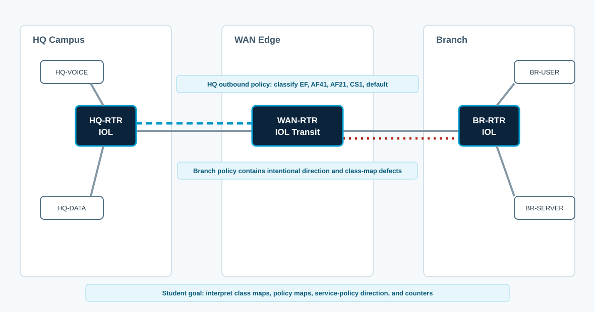

Overview
This lab targets ENCOR 1.4: interpret QoS configurations. The starting CML topology already contains QoS policy objects and service-policy attachments. Your job is to read the configuration, predict forwarding treatment, generate test traffic, interpret counters, and identify defects.
This is not a copy-paste QoS build lab. CCNP-level value comes from explaining what the device is actually doing: which traffic matches a class, which direction the policy applies, whether a command marks, queues, shapes, or polices, and whether the counters support the conclusion.
Topology
HQ-RTR classifies traffic from HQ-VOICE and HQ-DATA toward the branch. WAN-RTR is only transit. BR-RTR has a return policy with intentional defects. Endpoints are Alpine hosts so you can generate DSCP-marked ICMP traffic with ping -Q.

QoS Policy Map
| Class | Expected Match | Expected Treatment | Interpretation Focus |
|---|---|---|---|
| VOICE-EF | DSCP EF | Priority queue, strict bandwidth cap | Low latency is not unlimited bandwidth. |
| VIDEO-AF41 | DSCP AF41 | Guaranteed bandwidth | Bandwidth command reserves during congestion only. |
| CRITICAL-DATA | ACL-selected app traffic | DSCP AF21 or bandwidth class | ACL match and DSCP match are different classification methods. |
| SCAVENGER | DSCP CS1 | Policed or low bandwidth | Policing drops or remarks immediately; queueing schedules only under congestion. |
| class-default | Everything else | Best effort | Default class counters prove misses as much as matches. |
Task 1: Read the MQC Structure
Map each class-map to each policy-map and identify whether the policy is used for classification, marking, queueing, shaping, or policing.
show class-map
show policy-map
show running-config | section class-map
show running-config | section policy-map
show running-config | include service-policyDocument the policy hierarchy. A nested policy means the parent may shape while the child queues. A flat policy has only one level of class treatment.
Task 2: Classify and Mark Traffic
Generate marked test traffic from the Alpine hosts and predict which class should increment. Remember that Linux ping -Q takes the full TOS byte, not the DSCP number alone.
# HQ-VOICE host
ping -Q 0xb8 -c 20 10.20.10.10
# HQ-DATA host
ping -Q 0x88 -c 20 10.20.10.10
ping -Q 0x48 -c 20 10.20.10.10
ping -Q 0x20 -c 20 10.20.10.10
# Router verification
show policy-map interface ethernet0/0 output
show access-lists QOS-CRITICAL-DATA
show ip cef 10.20.10.10Depth check: DSCP EF is decimal 46, but the TOS byte for ping -Q is 46 shifted left two bits: 0xb8. AF41 is DSCP 34, or 0x88. AF21 is DSCP 18, or 0x48. CS1 is DSCP 8, or 0x20.
Task 3: Queueing vs Policing
Interpret what the policy does without assuming every class enforces the same behavior. Compare priority, bandwidth, shape average, police, and set dscp.
show policy-map WAN-EDGE-OUT
show policy-map interface ethernet0/0 output class VOICE-EF
show policy-map interface ethernet0/0 output class SCAVENGER
show interfaces ethernet0/0 | include rate|drops|queue
show platform hardware qfp active feature qos interface ethernet0/0 outputExplain whether packet drops would appear because of congestion management, policing, shaping queue depth, physical interface drops, or no match at all.
Task 4: Direction and Attachment
Find every service-policy attachment and determine whether it is placed in the right direction for the expected traffic path.
show running-config interface ethernet0/0
show running-config interface ethernet0/1
show running-config interface ethernet0/2
show policy-map interface
show ip cef exact-route 10.10.10.10 10.20.10.10A correctly written policy-map does nothing until it is attached to the right interface and direction. An output queueing policy attached to a LAN interface may show counters but still not protect the WAN bottleneck.
Task 5: Defect Analysis
Use the running configuration and counters to locate these defects. Repair only after you can explain the evidence.
- BR-RTR has a return QoS policy attached in the wrong direction.
- BR-RTR classifies voice with a
match-allclass that requires both DSCP EF and an RTP ACL, so EF ICMP test traffic falls into class-default. - HQ-RTR marks data correctly on ingress, but a later class map keys only on an ACL, so DSCP AF21 tests do not hit the expected class.
- A low-priority class uses
police, notbandwidth, so drops can appear even without interface congestion.
show policy-map interface ethernet0/0 output
show policy-map interface ethernet0/0 input
show running-config | section class-map match
show running-config | section policy-map
show access-lists
clear counters ethernet0/0